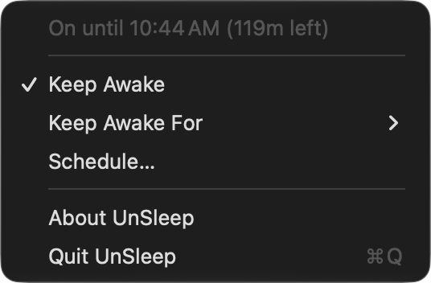
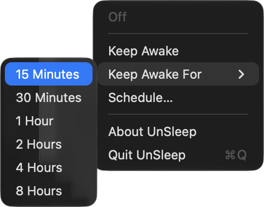
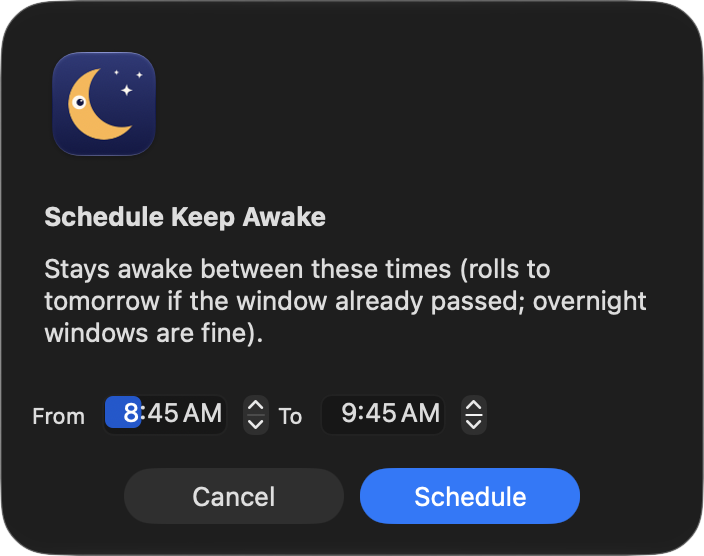

Keep your Mac awake, even with the lid closed
UnSleep is a tiny menu bar app and CLI for macOS. Keep your Mac awake until you say stop, for a set time, or during a scheduled window, and close the lid without it falling asleep. Turn it off and your sleep settings go back to how they were.



What it does
UnSleep sits in the menu bar as a sun while your Mac sleeps normally, a moon while it’s keeping it awake, and a clock while a scheduled window is waiting to start. Everything in the menu is also a command in the CLI.
Lid-closed awake
Blocks idle sleep and lid-close sleep, so downloads, builds and long-running jobs keep going with the lid shut.
For a while
Choose from 15 minutes to 8 hours. The menu shows when it ends and how long is left, then your Mac goes back to sleeping normally.
On a schedule
Set a start and end time, including overnight windows. UnSleep waits until the window opens and stops when it closes.
A CLI that stays in sync
The unsleep command talks to the menu bar app, so the menu and your scripts always agree. Handy for coding agents and other unattended work.
Leaves no trace
Turning UnSleep off, or quitting it, restores the sleep settings it changed. Nothing stays switched on behind your back.
Password-free, narrowly
Optionally skip the admin prompt on each toggle. The rule allows three exact pmset commands and nothing else.
Install
Install the app with Homebrew, or build it from source with the install script.
- macOS 12 Monterey or later
- Homebrew: Apple silicon
- Install script: any Mac, with the Xcode Command Line Tools
With Homebrew
Installs /Applications/UnSleep.app from the latest release with the patsissons/tap cask, and puts unsleep on your PATH.
$ brew install --cask patsissons/tap/unsleepThe app isn’t notarized by Apple yet, so the first time you open it macOS says it can’t verify it. Open System Settings → Privacy & Security and click Open Anyway next to the UnSleep message. Or clear the download quarantine from the terminal:
$ xattr -dr com.apple.quarantine /Applications/UnSleep.appWith the install script
Builds UnSleep from source on Apple silicon or Intel. It checks for the Command Line Tools and offers to install them if they’re missing, installs ~/Applications/UnSleep.app with the CLI linked at ~/.local/bin/unsleep, and launches the app. Run it again to update.
$ curl -fsSL https://raw.githubusercontent.com/patsissons/unsleep/main/install.sh | bashFrom a clone
Builds and installs the working tree to the same places as the install script.
$ git clone https://github.com/patsissons/unsleep
$ cd unsleep
$ ./install.shCLI
The CLI shares state with the menu bar app, and commands that turn UnSleep on launch the app if it isn’t running.
$ unsleep on # stay awake until turned off
$ unsleep on --for 2h # stay awake for a duration
$ unsleep on --until 17:30 # stay awake until a time
$ unsleep on --from 13:00 --until 15:00 # schedule a window
$ unsleep off # restore sleep and cancel schedules
$ unsleep status # print the current state
$ unsleep status --json # machine-readable state
Coding agents: have your agent harness run unsleep on when a session
starts and unsleep off when it ends, and your Mac stays awake for the whole session.
Add --for if you also want a safety cutoff.
Password-free mode
UnSleep changes sleep settings with pmset, which needs admin rights, so macOS asks for
your password on each toggle. Enable password-free mode when the app offers it on first launch,
or later from Set Up Password-Free Mode… in the menu. It adds a sudoers rule for
exactly these three commands:
| Command | What it does |
|---|---|
sudo /usr/bin/pmset -b sleep 0 | Sets battery idle sleep to never |
sudo /usr/bin/pmset -b disablesleep 1 | Blocks sleep on battery, including lid-close sleep |
sudo /usr/bin/pmset -b disablesleep 0 | Removes that block |
These only change sleep settings. They don’t grant broader admin access or access to your files.
You can also add the rule from a terminal; it runs
install-sudoers.sh
as root, so you may want to read it first:
$ curl -fsSL https://raw.githubusercontent.com/patsissons/unsleep/main/install-sudoers.sh | sudo bashGood to know
Use lid-closed mode with care. UnSleep works around macOS’s intended lid-close sleep. A closed lid traps heat that would otherwise escape through the keyboard and hinge, which raises the risk of overheating and drains the battery faster. Prefer short, light tasks, and where you can, keep the lid open or use Apple’s supported clamshell setup on power.
How do I start UnSleep at login?
Add UnSleep.app in System Settings → General → Login Items.
What happens if I quit the app while it’s on?
UnSleep restores the sleep settings it changed, the same as turning it off. That includes being stopped with kill, and logging out.
Does it work on Intel Macs and desktops?
Yes. UnSleep runs on any Mac with macOS 12 or later; the Homebrew cask is Apple silicon only, so use the install script on Intel. Lid-close sleep only matters on laptops, but keeping a desktop awake works the same way.
How do I uninstall it?
Turn it off first so your sleep settings are restored. With Homebrew:
$ unsleep off
$ brew uninstall --cask unsleep
$ sudo rm -f /etc/sudoers.d/unsleepWith the install script:
$ unsleep off
$ osascript -e 'quit app "UnSleep"'
$ rm -rf ~/Applications/UnSleep.app ~/.local/bin/unsleep
$ sudo rm -f /etc/sudoers.d/unsleep